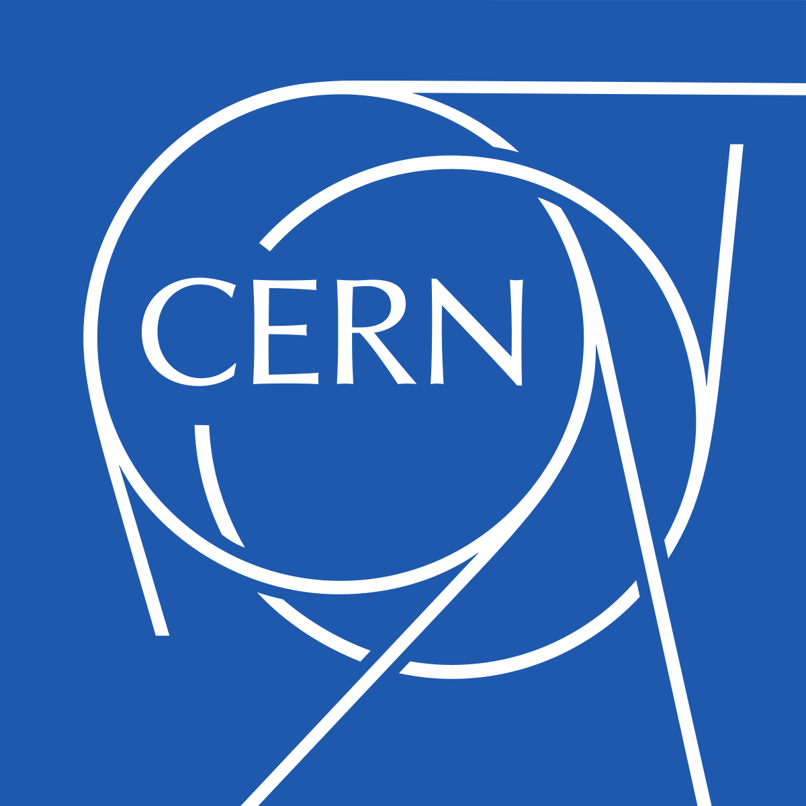

|
Alexandre Olivé Pellicer I'm a master's student at Video and Image Processing (VIPER) Laboratory at Purdue University. My advisor is Prof. Edward Delp. I graduated with a bachelor's degree in Telecommunications Engineering from Universitat Politècnica de Catalunya (UPC). |
{kind=link}
Publications |

|
Spacecraft Multivariate Time Series Anomaly Detection in the Presence of Non-Anomalous Spikes
Alexandre Olive Pellicer,
Sundip R. Desai,
Richard H. Foster,
Moses W. Chan,
Mary L. Comer,
Edward J. Delp
IEEE Aerospace Conference, 2025
|
|
|
Generation of Synthetic Echocardiograms Using Video Diffusion Models
Alexandre Olive Pellicer,
Amit Kumar Singh Yadav,
Kratika Bhagtani,
Ziyue Xiang,
Zygmunt Pizlo,
Irmina Gradus-Pizlo,
Edward J. Delp
IEEE SSIAI, 2024
project page
/
paper
|
Experience |
|
|
VIPER Lab (Purdue University) - Research Assistant
Feb. 2023 - Present
|
|
|
Accenture - Machine Learning Engineer
Nov. 2023 - Jan. 2024
|
|

|
CERN - Challenge Based Innovation Program Participant
Sept. 2022 - Jan. 2023
|
|
|
Accenture - Software Engineer Intern
June 2022 - Sept. 2022
|
Education |
|
|
Purdue University
Jan. 2024 - Present
|
|
|
Universitat Politècnica de Catalunya (UPC)
Sept. 2019 - June 2023
|